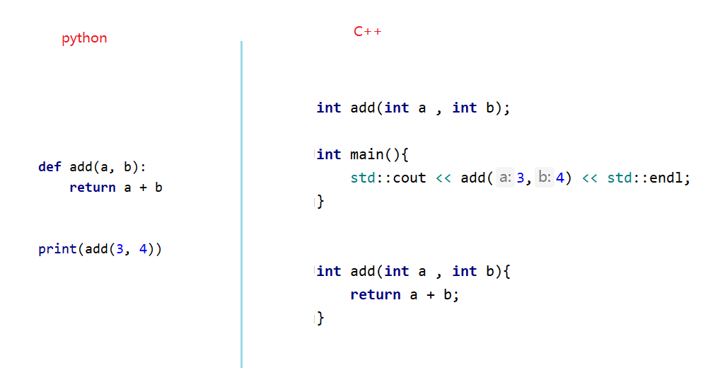

vector和函数
一、 字符串¶
字符串是最常用的一种数据类型了，在python中声明字符串和声明其他类型的数据一样，都非常的简单。但是在c++中，对于字符串的操作，相对来说要稍微复杂一些
1. C++ 风格字符串¶
C++ 标准库提供了 string 类类型,支持上述所有的操作，另外还增加了其他更多的功能。需要引入
#include<string>，由于string类声明在命名空间 std ,所以在使用的首要注意 命名空间的联合使用 。
//引入string库
#include <string>
using namespace std;
int mian(){
string s1;
string s2 {"北京"};
string s3{s2};
string s4 = "你好";
s1 = s3;
return 0 ;
}
二、 Vector¶
Vector其实很大程度上和数组一样，只是数组是固定长度，而vector是不定长度（动态增长）。 假设我们需要记录明年的测试成绩，但是我们并不知道明年会有多少个学生。那么可以有两种选择，定义一个固定长度的数组，这个长度超过假设的长度， 另一种办法就是使用动态数组，比如是： vector
vector 在C++ STL(标准模板库)中的一个容器，可以看成是对容器的一种扩展。在运行时可以改变长度 , 与数组具有相似的语法 , 相比数组更高效 , 提供越界检查
1. 声明和初始化¶
- 声明
使用vector除了要导入
#include<vector>之外，由于它声明于std命名空间里面，所以要配合std命名空间使用
#include <vecotr>
using namespace std;
int main(){
vector <char> vowels;
vector <int> test_score;
// =========================
vector <char> vowels(5); //声明一个初始大小为5的char类型vector
vector <int> test_score(10);
return 0;
}
- 初始化
#include <vecotr>
using namespace std;
int mian(){
//数组定义
int test_score []{100,99,18,81}
//vector定义
vector <char> vowels {'a' , 'e' , 'i' , 'o' ,'u'};
vector <int> test_score{ 100 ,98,95,90,80};
vector <double> temperatures{26,20.7};
return 0;
}
2. 访问vector¶
访问
vector中的元素有两种方式，一是仍以数组的方式，另一种是使用vector提供的at函数
- 数组的语法
#include <iostream>
#include <vector>
using namespace std;
int main(){
vector<int> test_score {100,90,85};
cout << "第一个成绩是: " <<test_score[0] << endl;
cout << "第二个成绩是: " <<test_score[1] << endl;
cout << "第三个成绩是: " <<test_score[2] << endl;
cout << "第三个成绩是: " <<test_score[3] << endl; //不会检查越界
return 0 ;
}
- vector的语法
#include <iostream>
#include <vector>
using namespace std;
int main(){
vector<int> test_score {100,90,85};
cout << "第一个成绩是: " <<test_score.at(0) << endl;
cout << "第二个成绩是: " <<test_score.at(1) << endl;
cout << "第三个成绩是: " <<test_score.at(2) << endl;
cout << "第三个成绩是: " <<test_score.at(3) << endl; //抛出越界异常
return 0 ;
}
3. 操作vector¶
- 修改vector中的元素
#include <vector>
using namespace std;
int main(){
vector<int> test_score {100,90,85};
test_score.at(0) = 73;
return 0 ;
}
- 往vector中追加元素
#include <vector>
using namespace std;
int main(){
vector<int> test_score {100,90,85};
test_score.push_back(80); // 100 , 90 , 85 , 80
test_score.push_back(95); // 100 ， 90 ， 85 ， 80 ， 95
return 0 ;
}
- 越界检查
只要当我们使用了vector的语法去获取超出索引的元素时，就会抛出异常。而使用数组的语法去获取元素，则不会进行越界检查

- 遍历vector
#include <iostream>
#include <vector>
using namespace std;
int main(){
//使用下标遍历
vector<int> scores{ 100 ,95 ,88 ,80 ,75};
for (int i = 0; i < scores.size(); ++i) {
cout << scores[i] << endl;
}
//基于范围for遍历
vector<int> scores{ 100 ,95 ,88 ,80 ,75};
for(int score : scores){
cout << score << endl;
}
return 0 ;
}
三、 函数¶
1. 函数介绍¶
在大多数地方，c++ 和 python的函数是一样的，都是用来包裹定义好的语句，避免重复拷贝粘贴。不过还是有些许不一样的地方。
- python的函数是以回车换行结尾，c++的函数是以 大括号结尾
- python的函数通常使用缩进方式来表示函数体， ，c++使用大括号区域来表示
- python是动态类型语言，而c++是静态类型语言，所以有时候需要像声明变量一样，声明函数。

2. 定义函数¶
函数的定义一般可以包含以下几个部分：
方法名称、方法参数、返回值、方法体， 根据(返回值 和 参数)可有可无的设置，函数一般会有以下4种方式体现。
- 声明并调用函数
#include <iostream>
using namespace std;
void say_hello(){
count << "hello" << endl;
}
int main(){
say_hello();
return 0 ;
}
1. 无返回值无参数¶
void say_hello(){
count << "你好 " << endl;
}
int main(){
say_hello();
return 0 ;
}
2. 无返回值有参数¶
#include<iostream>
using namespace std;
void say_hello(string name){
count << "你好 "<< name << endl;
}
int main(){
say_hello("张三");
return 0 ;
}
3. 有返回值无参数¶
#include<iostream>
using namespace std;
string say_hello(){
return "你好 张三";
}
int main(){
cout << say_hello() << endl;
return 0 ;
}
4. 有返回值有参数¶
#include<iostream>
using namespace std;
string say_hello(string name){
return "你好 "+ name;
}
int main(){
cout << say_hello("张三") << endl;
return 0 ;
}
3. 函数原型¶
一般来说，c++的函数一般包含声明和定义|实现两个部分。因为c++是静态类型语言，程序属于自上而下编译，所以在使用函数前，必须先表示函数的存在，告诉编译器函数所需要的参数以及函数的返回值是什么。
1. 函数定义在前¶
在调用函数之前，事先先定义好函数。
#include <iostream>
using namespace std;
//函数定义 ，函数的真正实现。
int add(int a , int b){
return a + b ;
}
int main(){
cout << add(1 ,2)<< endl;
return 0 ;
}
2. 使用函数原型¶
把函数分成声明和定义两部分，函数的原型定义在调用的前面，具体实现可以放在后面。
#include <iostream>
using namespace std;
//函数声明 ，也叫函数原型 并不知道这个函数具体是如何实现的。只是有一些基本架子而已。
int add (int a , int b);
int main(){
cout << add(1 ,2)<< endl;
return 0 ;
}
//函数定义 ，函数的真正实现。
int add(int a , int b){
return a + b ;
}
4. 分离式编译¶
一般说来，函数的声明 ( 函数原型 )通常都会放到头文件中，之所以称之为头文件是因为它总是在main函数的前面就引入进来。头文件一般以 .h 或者 .hpp 结尾，通常用于 写类的声明（包括类里面的成员和方法的声明）、函数原型、#define常数等，但一般来说不写出具体的实现
- math.h
为了能够让声明和定义能够快速的被关联上，通常它们的名称会被定义成一样的，这已经成为了一种默认的规定
//函数声明
int add (int a , int b);
- math.cpp
在源文件中对前面头文件的函数作出具体实现。
#include "math.h"
//函数定义 ，函数的真正实现。
int add(int a , int b){
return a + b ;
}
- main.cpp
#include <iostream>
#include "math.h" //这里使用"" 表示从当前目录查找
int main(){
add(1 ,2);
return 0 ;
}
6. 函数参数¶
实际上所有的编程语言函数传参都是采用拷贝的方式，把原有的数据拷贝给现在的参数变量，进而能够在函数中让这份数据参与计算。需要注意的是，默认情况下，参数变量得到只是原有数据的一份拷贝而已。所以无权对外部的数据进行修改。
1. 值传递¶
C++默认情况下，处理函数参数传递时，多数使用的是值的拷贝，少数部分除外。
#include<iostream>
using namespace std;
void scale_number(int num);
int main(){
int number{1000};
scale_number(number);
//打印number 1000
cout << number <endl;
return 0 ;
}
void scale_number(int num){
if(num > 100)
num = 100;
}
2. 传递引用¶
目前为止，我们所有函数的参数传递，都是对数据进行了一份拷贝（数组除外）。那么在函数的内部是不能修改值的，因为这仅仅是一份值的拷贝而已（函数外部的值并不会受到影响）。如果真的想在函数内部修改值，那么除了数组之外，还有一种方式就是传递
引用。引用实际上只是原有数据的一种别名称呼而已，使用
&定义
#include<iostream>
using namespace std;
void scale_number(int &num);
int main(){
int number{1000};
scale_number(number);
//打印number100
count << number <endl;
return 0 ;
}
void scale_number(int &num){
if(num > 100)
num = 100;
}